IIT Bhilai · Electrical Engineering · May 2022
Performance Analysis of RIS Aided Wireless Systems and Joint Transmission in IEEE 802.11be
Bachelor of Technology (Honours) thesis
Supervised by Dr. Sreejith T. V. and Dr. Arzad Alam Kherani
Better wireless links. Better ways to share them.
Two approaches to improving wireless communication—and a closer look at the scheduling that turns link capacity into service.
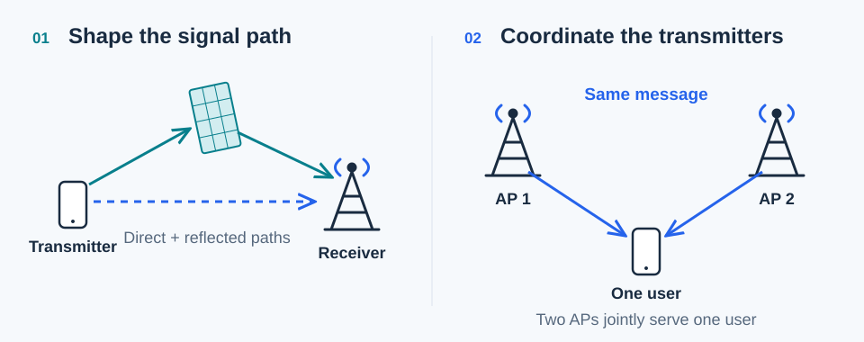
Swipe sideways to view the complete diagram →
The thesis in a minute
A stronger signal is only part of the story.
A user between transmitters can face weak reception and interference. This thesis asks two questions: can we improve the path a signal takes, and can transmitters work together to serve a user? It then studies how to schedule that shared service as data keeps arriving.
- 01
Reflect intelligently. RIS assistance is more useful when the direct path is strongly attenuated in the studied model.
- 02
Transmit together. Joint transmission can outperform independent, interfering service for users in parts of a corridor.
- 03
Schedule carefully. Queue evolution depends on arrival rates, service capacities, and how service alternates.
RIS-assisted wireless networks
Give the signal another path.
A reconfigurable intelligent surface (RIS) redirects an incident signal toward a receiver. The first part studies a UAV uplink reaching its base station through a direct path and additional reflected paths.
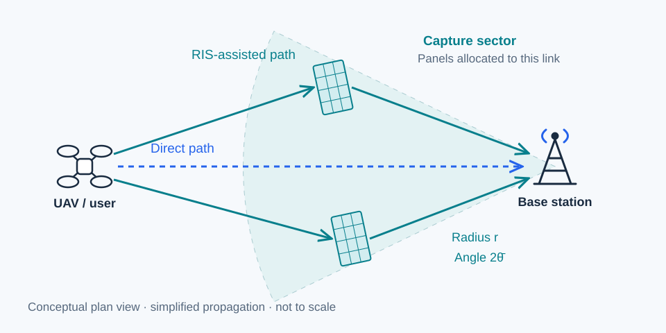
Swipe sideways to view the complete diagram →
The analysis varies the sector’s radius and angle, RIS density, and direct-link path loss. Base stations and panels follow spatial Poisson models. This is a noise-limited setting: interference is excluded.
Theoretical calculations and SimRIS-based simulations explore stationary and mobile cases. The key question is how much the reflected contribution adds relative to the direct signal.
When does RIS assistance matter?
The plots below vary capture angle with the same listed geometry and RIS density, but different direct-link path-loss exponents. Read the vertical scales carefully: the first plot uses an offset of about 2,533, while the second starts near 1.
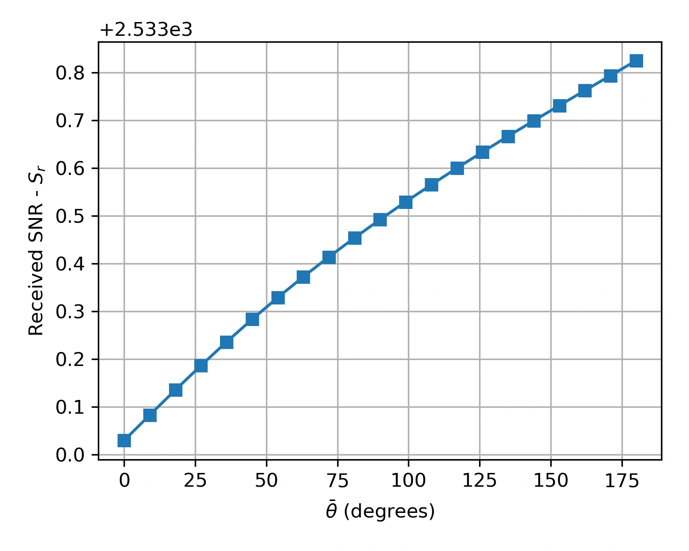
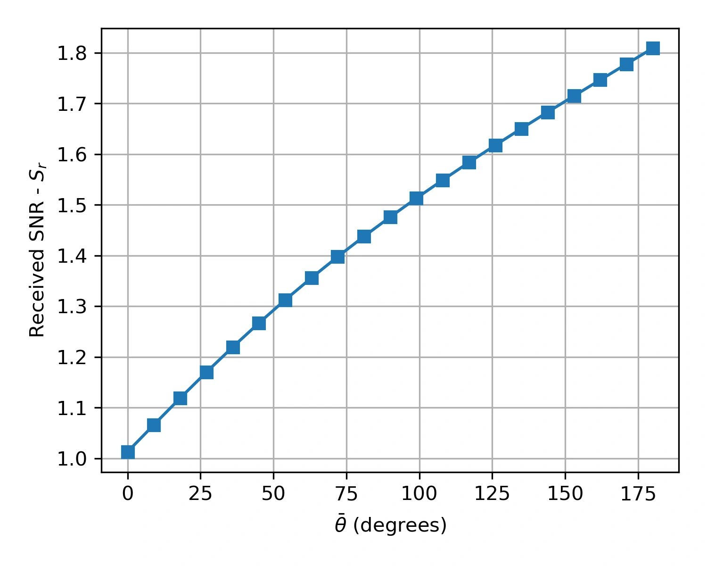
Listed parameters for both panels: capture radius 20 m, UAV–BS distance 50 m, RIS density 0.1 per m². These are theoretical results reproduced from the thesis.
Why placement matters—and what changes with mobility
Increasing capture radius does not produce uniform returns. The thesis’s knee-point analysis identifies regions near the base station and user where additional RIS deployment can have greater marginal benefit. This is a deployment insight, not a solved allocation algorithm.
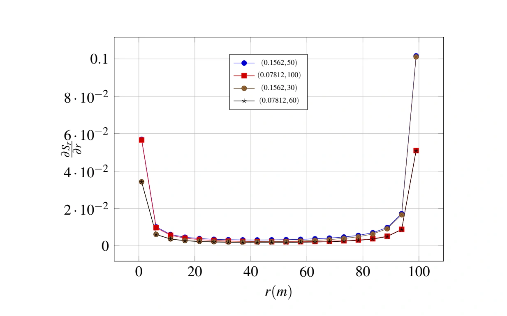
For the mobility setting, the thesis averages over changing user–base-station distance and reports increased average SNR with RIS assistance (Figs. 2.12–2.13).
Multi-AP coordination
Let the transmitters work together.
When two access points (APs) serve different users on the same channel, they also create interference. Joint transmission (JT) instead coordinates both APs to send the same message to one user.
Explore the three transmission modes
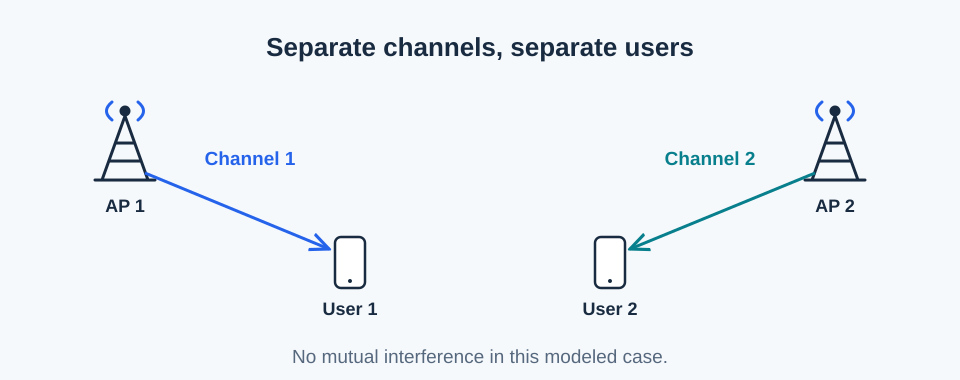
Swipe sideways to view the complete diagram →
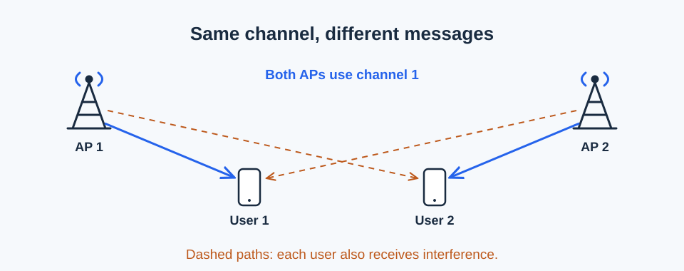
Swipe sideways to view the complete diagram →
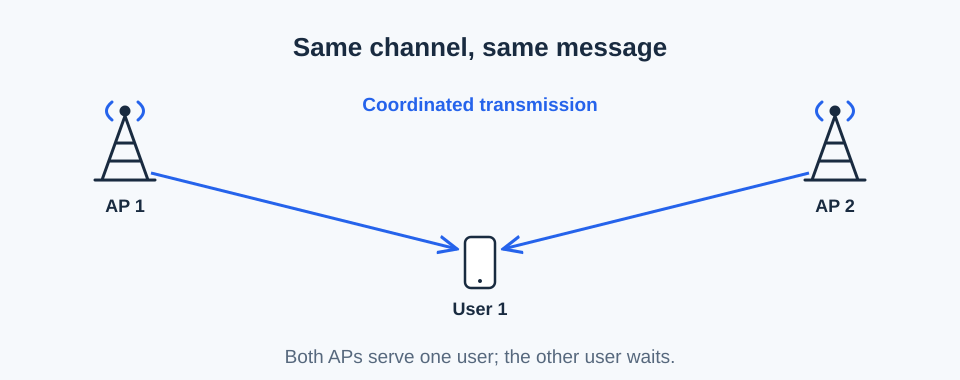
Swipe sideways to view the complete diagram →
Conceptual redraws of Figs. 4.1–4.3. This work was motivated by IEEE 802.11be research discussions in 2022.
Cooperation helps—but compare the whole system.
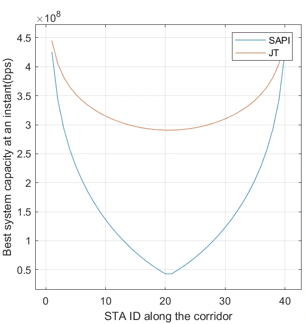
The corridor model places an AP at each end. The comparison identifies a region where cooperation is preferable to two independent, interfering transmissions.
There is a trade-off: JT occupies both APs to serve one user, whereas SAPI serves two users at once. A higher individual link rate alone does not settle the system-wide choice.
Modulation and coding also matter. The thesis examines discrete achievable rates alongside idealized Shannon capacities, changing the shape of the curves and the beneficial region.
See the modulation-and-coding example
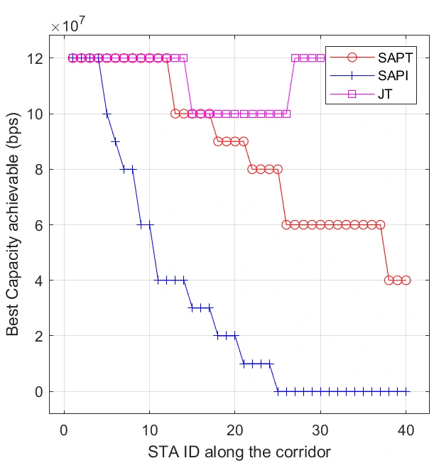
Fig. 4.7. Best per-station capacities with MCS, with the figure’s noise floor of −70 dBm. This is a different configuration from Fig. 4.6; it is not a matched numerical comparison.
Queueing and scheduling
A fast link still needs a service plan.
Data continues arriving while users wait. The thesis models a two-AP, two-user system with one queue per user and studies how queues evolve as joint service alternates.
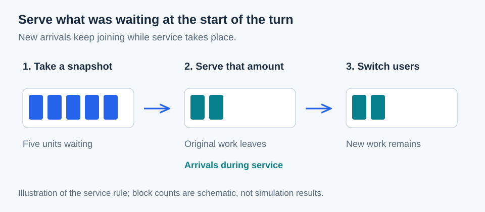
Swipe sideways to view the complete diagram →
The same schedule, two different outcomes.
The thesis represents a full round of service as a matrix update and studies conditions for stability and stationary behavior. These original examples show how arrival and service rates change the evolution of the total queue.
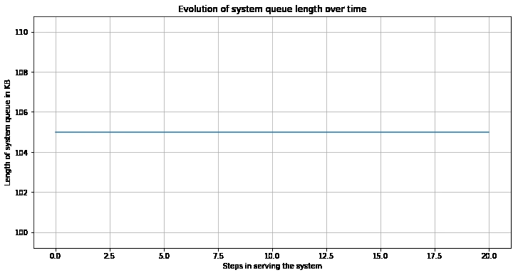
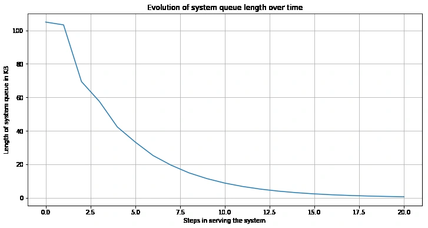
Combining joint and simultaneous service.
The final model adds a period of SAPI service after the two JT turns. It derives conditions for queues to return to their initial lengths after a round and examines delay and jitter. In the reported examples, longer SAPI periods reduce the reported average jitter; that finding depends on the chosen model and settings.
View the reported delay and jitter results
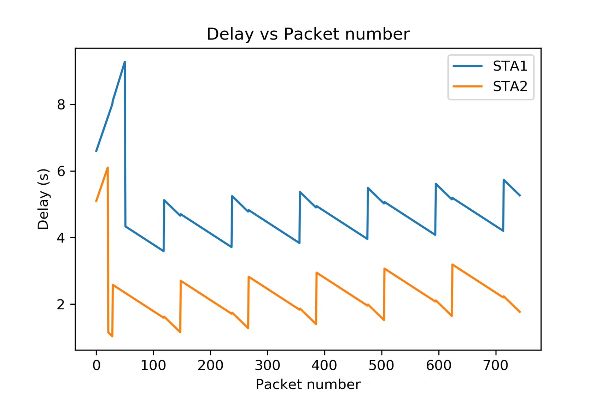
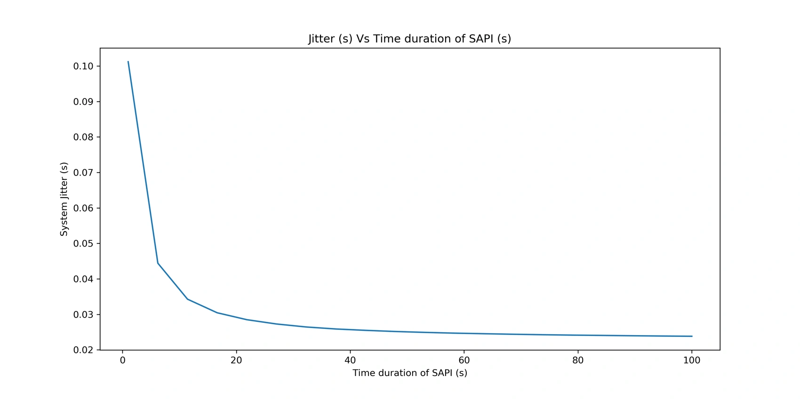
What to take away
Propagation, cooperation, and scheduling
belong in the same conversation.
The thesis explores where extra signal paths and coordinated transmitters can help—and why their benefits must be considered alongside the way users are served.
Scope of the work
The RIS results assume noise-limited operation and simplified propagation. The coordination analysis uses a two-AP corridor; the queueing analysis focuses on two users. Larger networks, richer channel models, and time-varying capacities are future directions, rather than established results here.
This page is a visual companion to the original thesis. Plots are reproduced from it; the diagrams are new explanatory drawings. Consult the PDF for definitions, derivations, assumptions, and full references.
Related research
The RIS portion relates to the COMSNETS 2022 paper Performance of RIS Assisted Networks in Noise Limited and Interference Limited Scenarios, cited as reference [6] in the thesis. The complete thesis also develops the separate coordination and scheduling work.
Cite the thesis
@thesis{soni2022btech,
author = {Soni, Ashutosh},
title = {Performance Analysis of {RIS} Aided Wireless Systems
and Joint Transmission in {IEEE} 802.11be},
type = {Bachelor of Technology (Honours) thesis},
institution = {Indian Institute of Technology Bhilai},
year = {2022},
month = may
}